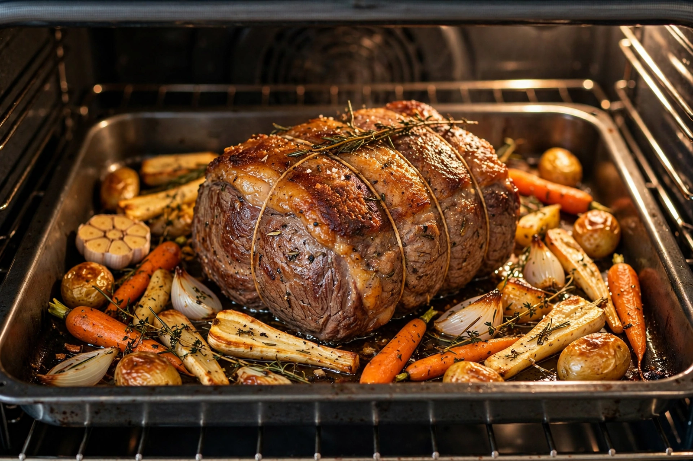

Roasting
From Wikipedia, the free encyclopedia

Roasting is a cooking method that uses dry heat, usually in an oven or over an open fire, where hot air surrounds the food and cooks it evenly on all sides. The term is most associated with meat — roast beef, roast chicken, roast pork — but also applies to vegetables, nuts and coffee beans. Temperatures typically range from 120 °C to 240 °C, and the high heat promotes browning through the Maillard reaction and caramelisation, producing a crisp, flavourful exterior while the interior stays moist.
Roasting differs from baking mainly in the foods involved and traditionally in structure: foods that are liquid or unstructured (batters, cakes) are baked, while solid foods such as meat and vegetables are roasted. Large joints were historically cooked on a spit before a fire (rotisserie), a method still used for kebabs, shawarma and whole roasted animals.
Method
Food is usually placed on a rack in a roasting pan so air circulates and drippings collect below. Cooks may baste the surface with fat or pan juices, truss poultry to help it cook evenly, and rest the meat after roasting so juices redistribute. A meat thermometer is the reliable way to judge doneness, since colour alone is misleading.
Meats and vegetables
The Sunday roast — roasted meat with roast potatoes, vegetables, gravy and often Yorkshire pudding — is a cornerstone of British cuisine. Dense vegetables such as carrots, squash and root vegetables roast well because dry heat concentrates their sugars. Lower-temperature "slow roasting" tenderises tough cuts, while very high heat suits thin or small items.
Coffee and nuts
Coffee beans are roasted to develop flavour and aroma from the green bean; roast levels from light to dark reflect time and temperature, and the process drives the chemistry behind coffee's taste. Nuts, seeds and chestnuts are likewise roasted to deepen flavour and improve texture.